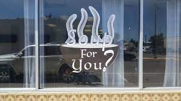
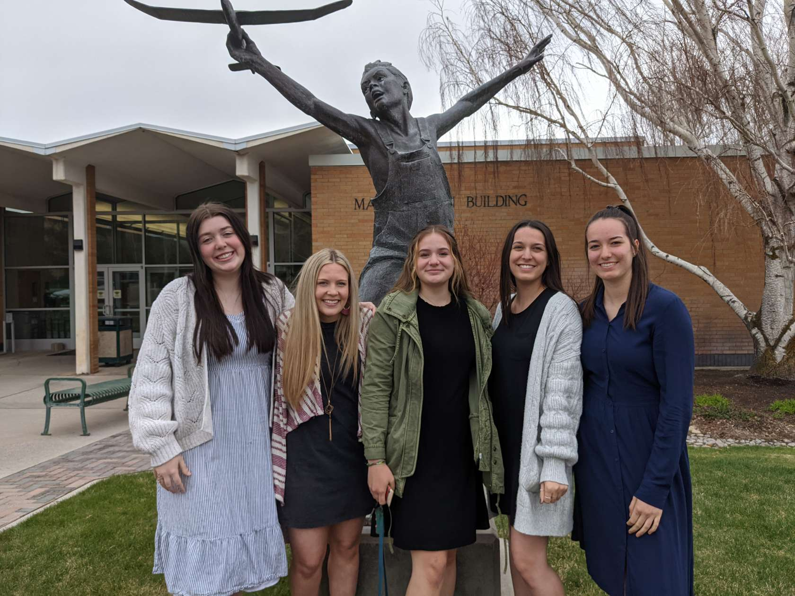

Target Audience
There are two main targets. One is businesses that want to particpate in the community, whether they are national or local. The second are college students that want to understand or be a part of the community. We anticipate that both are familiar enough with Rexburg that they want to know more about it and the businesses within it. They will access this site when they need information about the community, local businesses, community events, and service projects.
Persona #1: Businesses
Soup for You LLC is a small one-store business in Rexburg. Being a relatively new business, they may need additional help in connecting with other businesses or in receiving advice. Businesses like Soup for You will need a way to see community news and events to stay up to date and particpate if they want.
Persona #2: Residents
College students are residents of Rexburg, even if for a small period of time, and are always looking for something to do. Whether they are looking for a new place to eat, a new place to visit, or an oppurtunity to serve, they are active and want to be a part of the community.